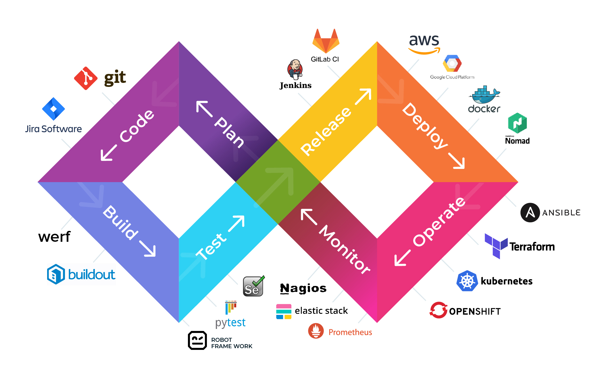

Hello Word Fabien

CICD Pipeline Using Git-Hub, Jenkins, Docker and Kubernetes on Google Kubernetes Engine GKE !
Fabien Andrianambinintsoa, Docker and Kubernetes Demo
Numero : 038 19 720 63 , Email - fabienboy661@gmail.com
Copyrights@2024MokolosDevOps